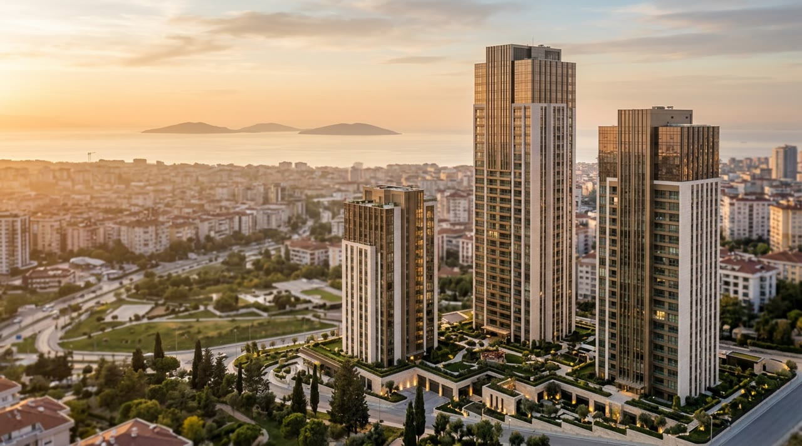

Bina ve komşuluk
Evin hazır. Şimdi hayat.
Yeni taşınanlar için bina, komşuluk ve ilk gün rehberi.
İlk gün rehberini aç
Yaşamı planla
- Binayı 3B gezKuleleri ve bina deneyimini incele.
- Yaşam rehberiYeni bir evde ilk bakacağın yerleri keşfet.
- Bina alanlarıYapıya ve çevresine ait yaşam başlıklarını aç.
- Üç çatıBinadan başlayan şehir rotalarına bak.
- Dila ile tasarlaÖlçü, kıyafet ve renk provası yap.
- Bina ve kent atölyesiKulelerin görsel çalışmalarını incele.